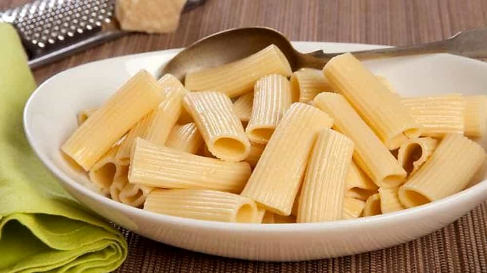

Home
Pasta

Description
As an Italian, it is my duty to teach how to cook pasta.
Ingredients (for 2 servings)
- 200g (7 oz) pasta (spaghetti, penne, or your choice)
- Water (enough to boil the pasta)
- 1 tbsp salt
- tbsp butter or extra virgin olive oil
- Grated Parmesan cheese (optional)
Steps
- Boil the water: Fill a pot with plenty of water (about 1 liter per 100g of pasta) and bring it to a boil.
- Add salt: Once boiling, add the salt (about 10g per liter of water).
- Cook the pasta: Add the pasta and cook according to the package instructions, stirring occasionally.
- Drain the pasta: When it's al dente, drain it, keeping a little pasta water if needed.
- Season: Mix the pasta with butter or olive oil. If needed, add a bit of pasta water for a smoother texture.
- Sprinkle with Parmesan cheese (optional) and enjoy!